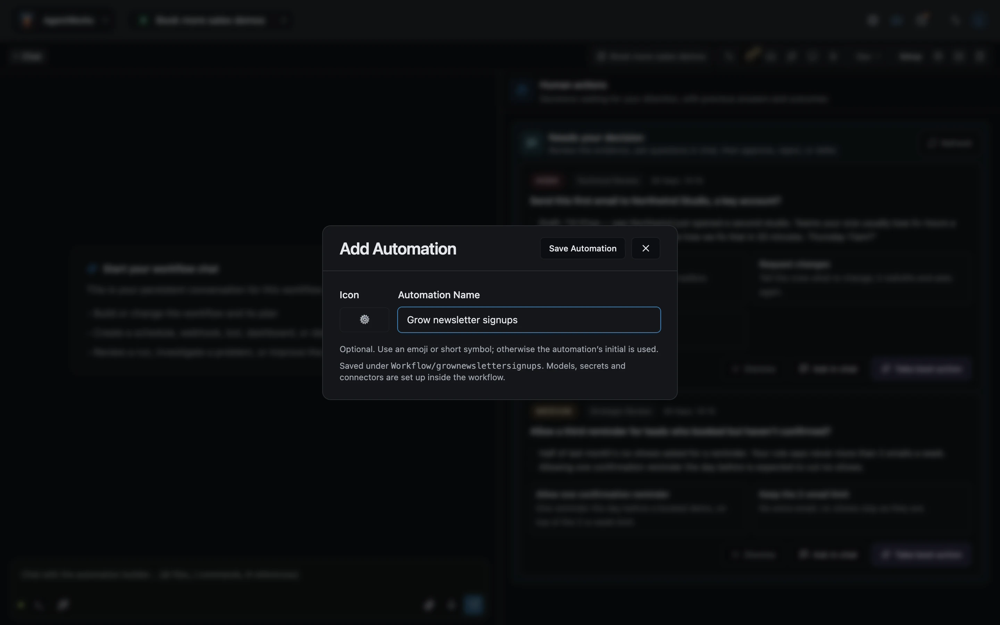
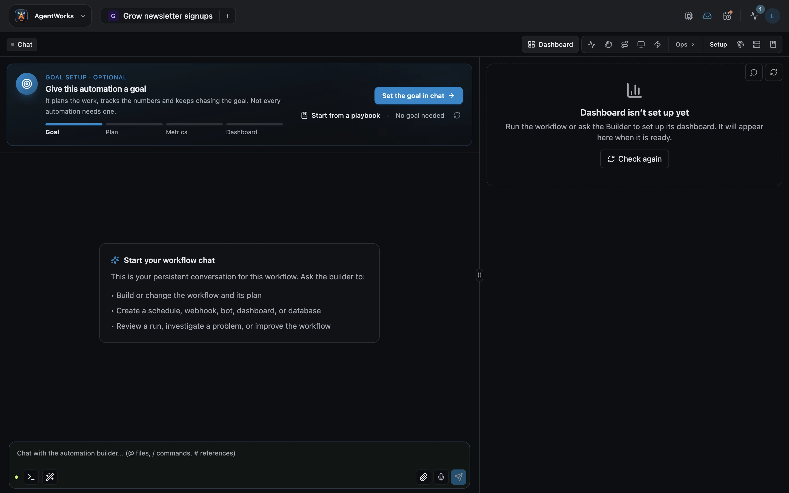
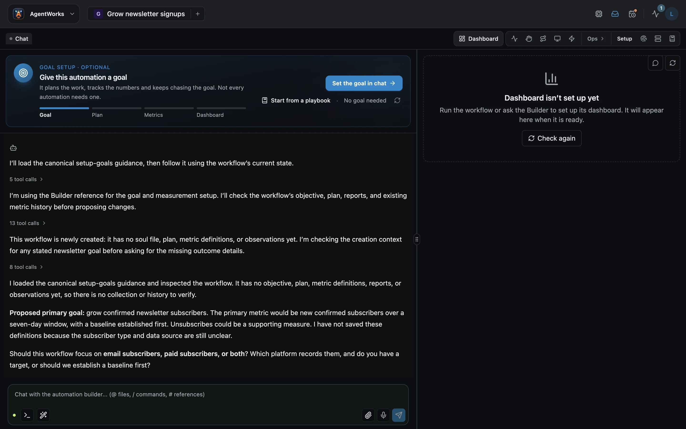

AgentWorks guide
Create your first automation
Name it, then give it a goal

Demo data

Demo data
Demo data

Demo data

Your automation has a goal.
Next: decisions and autonomy
To create an automation, press plus next to its name, give it a name, and save it.
A new automation starts with goal setup.
It's optional, but it's what keeps AgentWorks working until the number moves.
It takes four steps: the goal, the plan, the metrics, and the dashboard.
Choose Set the goal in chat, or start from a playbook.
The builder checks what you have, proposes a goal and a metric, and asks only what it needs, like where the number comes from, and what target you want.
Answer in plain words. Once the goal and its numbers are set, your dashboard shows progress, run after run.